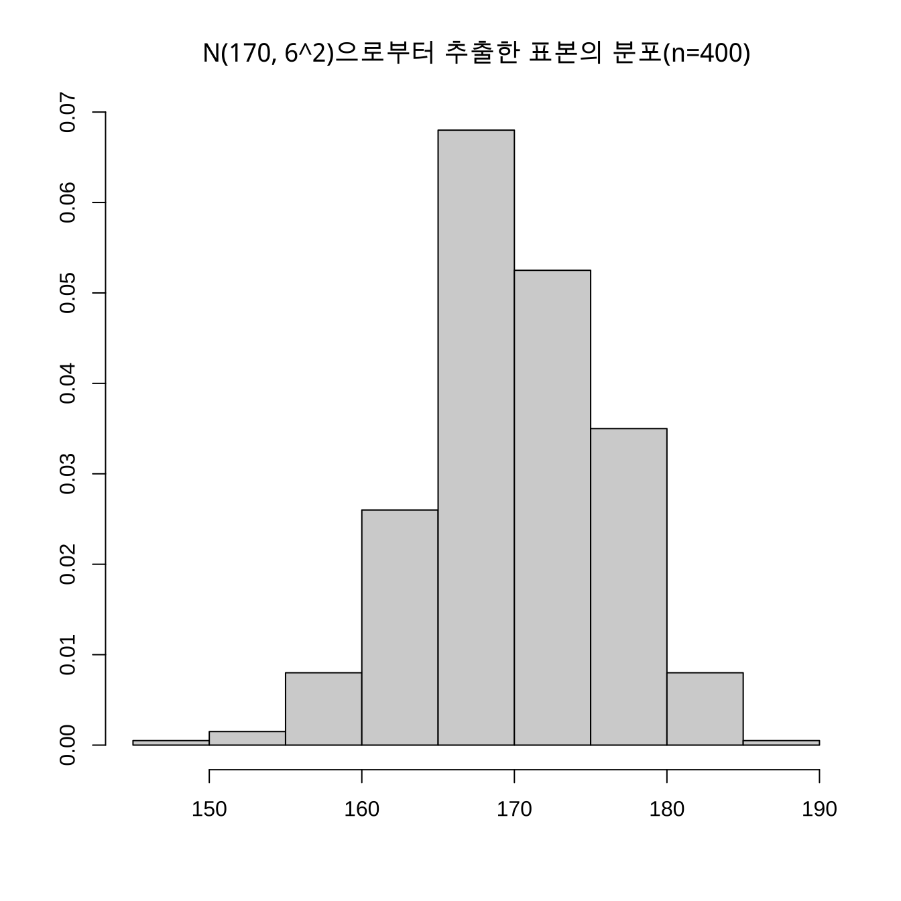

3.28 TIL20220328
베르누이 시행- p의 확률로 원하는 결과가 나타났을 때 성공으로 (1-p)의 확률로 그렇지 않은 결과가 나타났을 때 실패로 하는 두 가지 결과가 나타나는 확률실험을 베르누이 시행이라 한다.
이항 분포- 성공 확률이 p로 동일한 베르누이 시행을 n번 반복해서 실험하는 경우, 실험이 n번 반복되더라도 성공 확률 p는 변하지 않고 동일한것으로 이는 앞의 실험이 뒤에 할 실험에 영향을 끼치지 않고 각 실험이 서로 독립적으로 실행될 때 이와 같은 실험에서 성공 횟수가 따르는 분포함수를 이항분포라 한다.
이항 계수- \(p^x(1-p)^{n-x}\)
## [1] 0.3292181## [1] 0.08230453# B(6, 1/3)의 기댓값과 분산
n <- 6
p <- 1/3
x <- 0:n
px <- dbinom(x, size = n, prob = p)
ex <- sum(x * px)
ex2 <- sum(x^2 * px)
# V(X) = E(X^2) - {E(X)}^2
varx <- ex2 - ex^2; varx## [1] 1.333333options(digits = 3)
mu = 170
sigma <- 6
ll <- mu - 3*sigma
ul <- mu + 3*sigma
x <- seq(ll, ul, by=0.01)
nd <- dnorm(x, mean=mu, sd=sigma)
plot(x, nd, type="l", xlab="x", ylab="P(X=x)", lwd=2, col="red"); abline(v=mu)
## [1] 170.02 6.01hist(smp, prob=T, main="N(170, 6^2)으로부터 추출한 표본의 분포(n=400)", xlab="", ylab="", border="black"); lines(x, nd, lty=2)